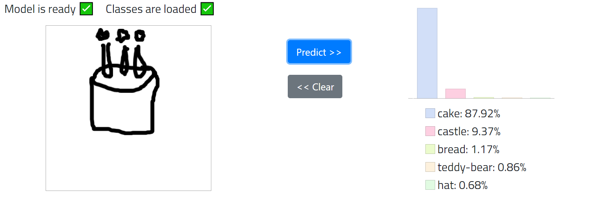
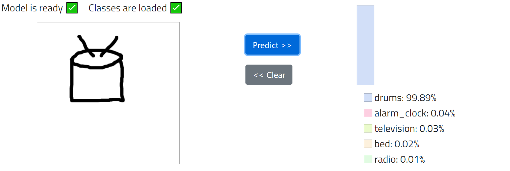
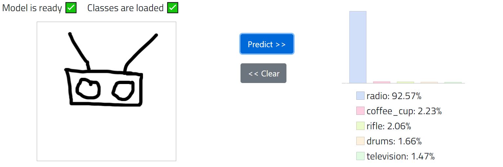
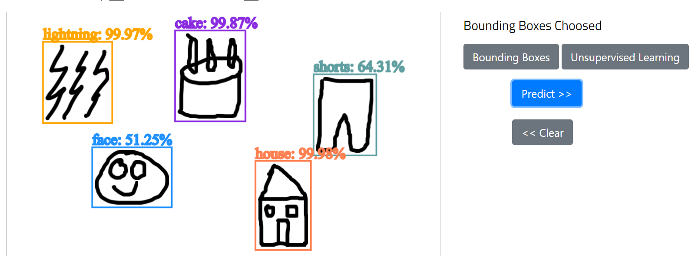

Can a Neural Network recognize sketch drawings?
SketchCNN is a Convolutional Neural Network that can recognize sketch drawings.
Trained on millions of examples from Quick Draw dataset it can recognize sketches across over 100 different categories.
The classes that can be recognized are:
hourglass remote_control traffic_light face cake laptop toothpaste postcard strawberry hamburger
train television shoe castle baseball_bat elephant sword map hammer streetlight
pizza book mug tooth umbrella lightning dragon paint_can light_bulb basket
knife hat firetruck basketball pants drums keyboard popsicle octagon teapot
rainbow guitar envelope skateboard paintbrush stairs suitcase tennis_racquet shorts truck
toothbrush car door star bread mailbox smiley_face cell_phone nail mountain
microphone snowman tornado fish telephone eyeglasses sun binoculars floor_lamp t-shirt
windmill washing_machine key compass ladder saw bed grapes pineapple pencil
ice_cream hot_air_balloon coffee_cup leaf skyscraper snowflake dumbbell pillow wheel house
anvil lighthouse teddy-bear scissors axe rifle radio lantern alarm_clock stop_sign submarine
"Sketch" recognizes a single sketch and outputs the first 5 classes with highest probabilities.
The accuracy is increased by not converting to a tensor the entire canvas but only the minimum bounding box of the sketch.



"MultiSketch" recognizes multiple sketches and outputs the class with the highest probability.
There are two methods to find the sketches in the canvas; first is combining the bounding boxes of the different strikes used in the sketches
in order to find the minimum bounding box for each. The second method uses K-means algorithm to find the clusters of the different sketches.
This requires, however, the user to input the number of sketches they draw on the canvas.
I've tried using the elbow method to automatically pick the correct number of clusters but as good as it sounds in theory there is
no guarantee that while iterating over the number of clusters and computing the SSE each and every single one of them ends in the global minimum.
Actually, even with the user inputing the number of clusters and the clusters being chosen at the same position as random input datapoints many times the
K-means algorithm will end up in a local minimum.

Email: lestef94[at]outlook[dot]com